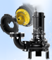

2023年
問題131 排水槽と排水ポンプに関する次の記述のうち，最も不適当なものはどれか．
（1）排水水中ポンプは，吸込みピットの壁面から200mm以上離して設置する．
（2）排水槽のマンホールは，排水水中ポンプ又はフート弁の直上に設置する．
（3）即時排水型ビルピット設備は，排水槽の悪臭防止に有効である．
（4）排水槽の底の勾配は，吸込みピットに向かって1/15以上1/10以下とする．
（5）汚物ポンプの最小口径は，40mmとする．
2023年
問題131 正解（5） 頻出度AAA
汚物ポンプの最小口径は，80mm である．
排水ポンプの種類（2023-131-1表参照）．
対象排水（排水槽の名称）とポンプの名称が異なることに注意．
| 名称・種別 | 対象排水 | 最小口径 | 通過異物の大きさ | 備考 | |
| 汚水ポンプ | 浄化槽排水，湧水，雨水 | 40mm | 口径10%以下 | 原則として固形物を含まない排水． | |
| 雑排水ポンプ | 厨房以外の雑排水，雨水 | 50mm | 口径の30～40%以下 | 口径50mmで20mmの形異物が通過すること． | |
| 汚物ポンプ | ノンクロッグ型 | 汚水，厨房排水，産業排水 | 80mm | 口径の50～60%以下 | 口径80mmで53mmの木球が通過すること． |
| ボルテックス型 | 口径の100% | ||||
ノンクロッグ型（クロッグ：詰まり，ノンフロッグ：詰まりのない）水中ポンプの例を2023-131-1図に示す．
2023-131-1図 ノンクロッグ型水中ポンプの例

出典 株式会社 鶴見製作所
https://www.tsurumipump.co.jp/exposition/watertreatment-expo/newproduct/
-(1) ，-(2) ，-(4) 排水を建物から重力式で排除できない場合は，最下層に排水槽を設け，排水ポンプで排出する．
排水槽は，貯留する排水の種類によって汚水槽，雑排水槽，湧水槽，雨水槽などがある．
排水槽の構造については2023-131-2図並びに下記参照．
2023-131-2図 排水槽の構造

1．マンホール
内部の保守点検が容易な位置（排水ポンプもしくはフート弁の真上）に有効内径600mm（直径が60cm以上の円が内接することができるもの）以上のマンホールを設ける．排水槽のマンホールふたはパッキン付き密閉型にする．
マンホールは2個以上設けることが望ましい．
2．排水槽の底部には吸込みピットを設け，ピットに向けて1/15以上，1/10以下の勾配を設ける．
掃作業時の安全を図るため底部の一部を階段にする．
吸込みピットは水中ポンプの周囲に保守のためのスペース並びにエアの吸込み防止のため200mm以上の空間を設けられる大きさとする．
3．通気管は単独に大気中に開口する．
排水槽は，通気管以外の部分から臭気が漏れない構造とする．
ブロワによってばっ気する場合は，槽内が正圧になるので排気を行う．
7．排水ポンプについて
1）排水ポンプは原則として 2 台設置し，常時は交互運転する．
2）排水ポンプは汚水の流入部から離して設置する（汚水とともにエアを吸う）．
3）排水ポンプには，水中ポンプ，立て型ポンプ，横型ポンプ等があるが，設置スペースが要らず，据付の容易な水中ポンプが多く使用されている．
4）排水槽の水位・ポンプの運転の制御にはフロートスイッチ（2023-131-3図）が適している（電極棒は汚物が絡まり導通して誤動作する）．
2023-131-3図 フロートスイッチ

-(3) 即時排水型ビルピット設備は，排水槽の悪臭防止に有効である（2023-131-4図）．
2019-132-4図 即時排水型ビルピット設備